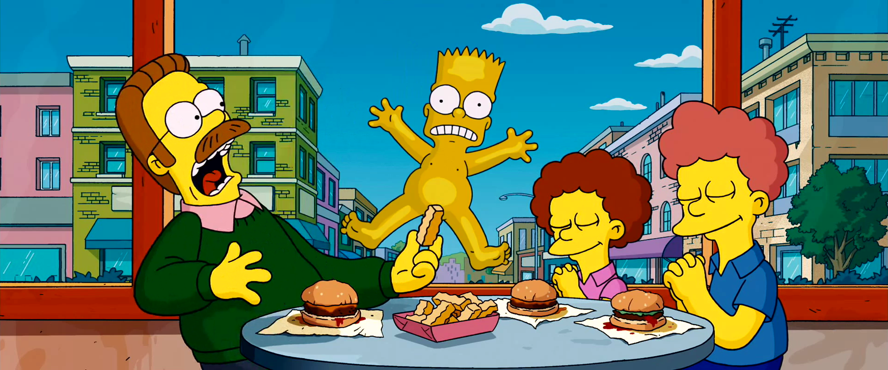
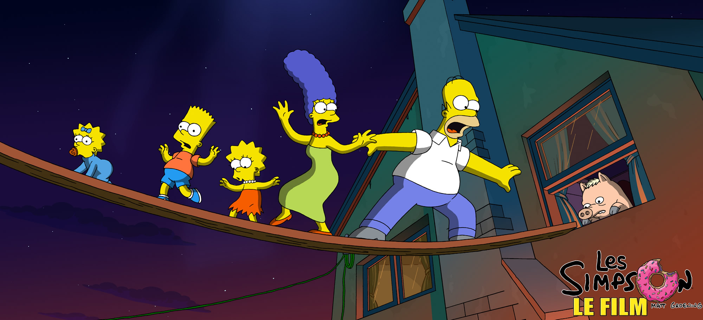
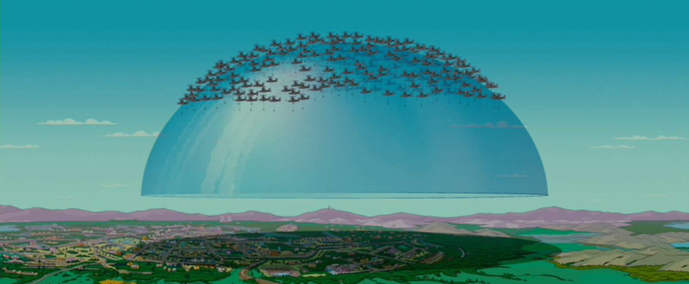
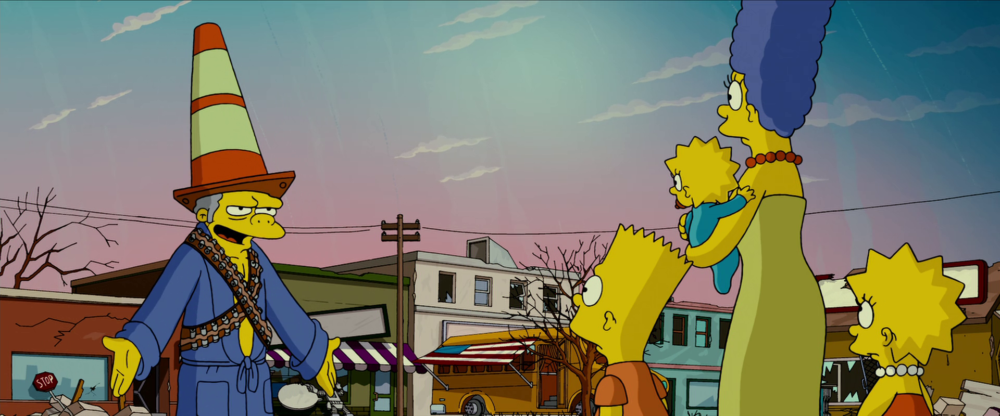

Les Simpson, le film
Informations générales
Année de Sortie : 2007
Réalisateur : David Silverman
Doubleurs Principaux originaux en anglais :
Dan Castellaneta (Homer Simpson/Abraham Simpson/Krusty le clown)
Julie Kavner (Marge Simpson)
Nancy Carthwright (Bart Simpson/Nelson Muntz)
Yeardley Smith (Lisa Simpson)
Harry Shearer (Ned Flanders/Arnorld Schwarzenegger/Otto Bus/Monsieur Burns/Révérend Lovejoy)
Genre : Film d'animation/Comédie/Aventure
Résumé
Après un concert des Green Day (groupe de punk), le sujet de l'environnement devient important dans la ville de Springfield. Homer et Bart jouent à "cap ou pas cap" et ce dernier finit par traverser la ville nu, créant des surprises. Après cet épisode embarrasant ,Homer adopte un cochon.

Lisa alerte sur la pollution du lac de Springfield, elle rencontre Colin, elle se lie d'amitié avec lui.
Homer part à la pêche avec Bart et leur cochon mais il pollue le lac en voulant attraper des poissons. Le lac devient inutilisable. Cela crée la colère d'une agence environnementale qui entoure Springfield (la ville où vivent les Simspon) d'un dôme infranchissable, de nombreux Springfildiens en veulent aux Simpson, et décident de les attaquer.

Les Simpson s'enfuient en Alaska, leur vie est très risquée à Springfield, où une bombe faisant exploser le dôme a été activée. Ils sont recherchés, ils se déguisent pour ne pas se faire retrouver pour aller tranquillement vers l'Alaska.


Ils vivent bien mais tous, sauf Homer, veulent retourner à Springfield, car la ville leur manque et certaines personnes aussi, par exemple, Lisa, leur fille est tombée amoureuse de Colin.
Cependant, la famille , sans Homer, se fait arrêter à Seattle. Homer , essaye de revenir vers Springfield car sa famille lui manque. Il y arrive difficilement et se perd au millieu des neiges de l'Alaska.
Lorsque la famille se réveille à Springfield, la ville est en ruine. Homer réussit à passer sous le dôme, il peut même sauver la ville.

Pourtant, il fait tomber la bombe et cela a pour effet de réduire le compte à rebours avant l'explosion du dôme. Homer est obligé de sauver la ville, il prend une moto avec son fils Bart et doit attendre le sommet du dôme pour mettre la bombe au-dessus afin de ne pas détruire ce qu'il reste (pas grand chose) de Springfield.
Mais son fils Bart réussit à jeter la bombe au dernier moment, il réussit à ne pas mettre encore plus en danger Springfield. Le chef de l'agence environnementale tente d'assasiner Homer mais celui-ci ne meurt pas grâce à une pierre jetée sur lui par sa petite fille (bébé) Maggie.
Après cela, la ville est en reconstruction , y compris la maison des Simpson . Le film se termine sur cela.
Bande-Annonce du Film
Sources des informations et médias
Page wikipédia du film, utile pour les informations générales (images et infos).Page allociné du film, utile pour l'affiche du film.
Vidéo youtube de la bande-annonce.
Site spécialisé en français sur les Simpson (images).
Site spécialisé en anglais sur les Simpson (images).